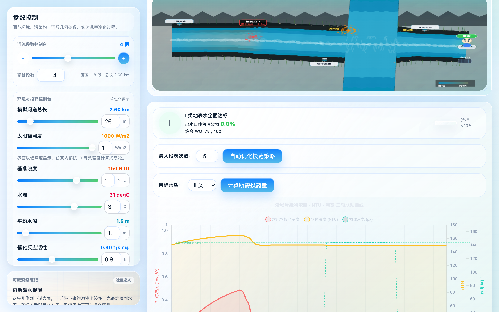

环境工程 · 计算建模
河流光催化净化
动态仿真
基于微积分切片思想与指数衰减模型
让一条河的自我净化，变得可算、可调、可看。
为什么做这个项目
痛点：河流污染怎么治？
- 河流污染治理是世界性难题，催化剂又贵。
- 传统投药靠经验——投多了浪费钱，投少了不达标。
- 缺一个能"先算后投"的定量工具：到底在哪投、投多少？
我们的答案
一条会"自我净化"的数字河流
- 浏览器里的河流数字孪生：布置排污口和催化剂投放点。
- 实时算出污染物沿程浓度怎么衰减、最后能否达标。
- 还能自动帮你找"最省催化剂、又能达标"的投放方案。
制作过程 · vibe coding
vibe coding 是什么？
- 不再逐行手敲代码，而是用自然语言把想法讲给 AI，AI 落地成代码。
- 你专注"我想要什么、感觉对不对"，AI 负责"具体怎么写"。
- 快速试错、即时反馈、跟着感觉迭代——所以叫 vibe coding。
制作过程 · 真实历程
我们怎么 vibe 出这个项目
- 从一句"我想模拟河流光催化净化"开始。
- 与 AI 结对：提需求 → 生成代码 → 跑起来看效果 → 再调整。
- 物理引擎一路迭代到 v4：物理-渲染分离、消除量纲混用、十条物理定律。
核心算法思想
把整条河"切片"
- 一整条河又长又复杂，直接算根本算不动。
- 微积分的智慧：切成 200 个小段（微元），每段近似看作均匀。
- 逐段计算、再首尾相接累加 —— 这就是沿程积分。
学科知识 · 高等数学
这就是定积分的微元法
∫
- 分割 → 近似 → 求和 → 取极限。
- 把连续的河流问题，离散成一块块可计算的小段。
- 切得越细，结果越接近真实——程序用 200 段做平衡。
核心算法 · 指数衰减模型
污染物按比例越变越少
C(t) = C₀ · e−k·t
- C₀ 是初始浓度，t 是停留时间，k 是降解速率常数。
- k 越大、河水停留越久，净化得越彻底。
学科知识 · 化学动力学
一级反应与半衰期
- 一级反应：反应速率正比于当前浓度——浓度越高，降得越快。
- 半衰期：浓度减半所需时间是固定的，和指数衰减一一对应。
- 程序里 k = 催化剂活性 × 投药比 × 有效光强，没有"魔法数字"。
核心算法 · 朗伯-比尔定律
光，进不去浑水的底
I = I₀ · e−α·d
- 光进入水里会被吸收，水越深 d，剩下的光 I 越弱。
- 水越浑（NTU 越高），衰减系数 α 越大，光催化越难发生。
学科知识 · 物理光学 + 流体力学
光 + 水流，共同决定净化能力
- 物理光学：朗伯-比尔定律解释了"浑水底下几乎没有光"。
- 流体力学：连续性方程 Q = v · A，河道越窄流速越快、停留越短。
- 光强不足或停留太短的河段，催化剂效率都会大打折扣。
核心算法 · 自动优化
一键找到最优投药方案
- 投药越多越干净，但成本也越高——到底怎么权衡？
- 用贪心搜索快速逼近，再用 Nelder-Mead 局部精修。
- 自动构建帕累托前沿，给出"最少投药点 × 恰好达标"的方案。
学科知识 · 运筹学 / 最优化
多目标优化与帕累托最优
- 两个目标互相打架（少投药 vs 高净化），没有唯一最优解。
- 帕累托前沿：上面每个点都"想更省就得牺牲效果，反之亦然"。
- 贪心负责快、Nelder-Mead 负责准，组合起来又快又好。
达标判定 · 国家标准
GB3838-2002 六级水质分类
- 对照《地表水环境质量标准》，实时判定每段属 I 类到劣 V 类。
- 界面用红 / 黄 / 绿信号灯直观提示水质好坏。
- 残留浓度低于 10% → 达到 I 类地表水标准。
现场演示
真实程序长这样
 河道分段与漂流探针
河道分段与漂流探针 污染与催化剂投放配置
污染与催化剂投放配置 污染物浓度沿程衰减曲线
污染物浓度沿程衰减曲线
GB3838 达标信号与水质评估▶ 切到真实程序，现场操作演示
总结 · 致谢
我们做到了什么
- 用 vibe coding，把高数、化学、物理、运筹学缝进了一条"会自我净化的数字河流"。
- 收获：跨学科建模能力 + 与 AI 协作开发的真实经验。
- 感谢老师与同学们的聆听！